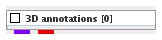
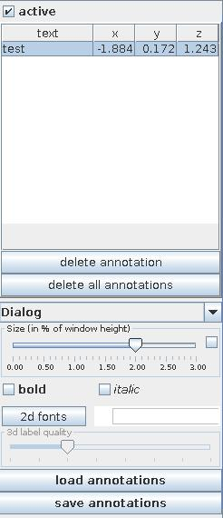
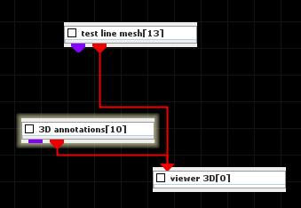
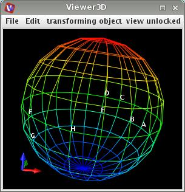

| input port | type | description | data acceptors |
|---|---|---|---|
| output port | type | description | data schemas |
| annotationsField | VNIrregularField | ||
| outObj | VNGeometryObject |
3D annotations
The module annotates geometry objects in the viewer.
Output data
At output there is an irregular field and a geometry object.
Computation parameters

In order to use this module the active check box has to be on.
To generate annotations click left mouse button at the appropriate place in the viewer. If the clicked point coincides with a mesh point annotation appears near this point, if not it appears near the origin of the coordinate system.
The click coordinates are collected in a table in the parameters panel. Change the annotation text clicking at the right place in the table and typing in a new text.
In order to make an annotation at an inner point switch on the pick 3D active check box in the Viewer menu (right mouse click at the viewer window, general tab). The cursor changes its appearance. Left mouse click at the viewer window causes to appear a line going into the viewer window. Drag the object to see this line. Click on the line in order to mark a new annotation situated in the click point. The click coordinates appear in the table in the parameters panel. Change the annotation text near the coordinates, clicking at the right place in the table and typing in a new text.
Delete an annotation by choosing the appropriate row in the table and pressing the delete annotation button, or delete all points choosing delete all annotations.
The font drop down list defines the font of the numbers.
The font size slider scales the size of the font in percent of the window height. If check box on the right hand side is on the user can change minimum, maximum and current value.
The bold and italic check boxes define font style as bold and/or italic.
Use 2d fonts/3d fonts button to switch between 2D or 3D number fonts. By default 2D fonts are used. They consume less memory and look cleaner.
In the case of 3d fonts the 3d label quality slider is active and the user can increase the quality of the fonts.
Load and save annotations using load annotations and save annotations button.
Example

Choose the test line mesh module from the test objects library and 3D annotations module from the general mappers and accessories library and move them into the work space. Connect their geometric output port with the viewer module.
In the viewer window click on several mesh points. In the place of annotations there appear ****, ehich can be changed in the 3D annotation UI.
